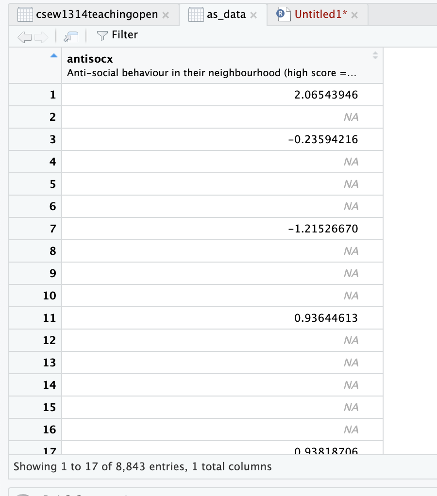
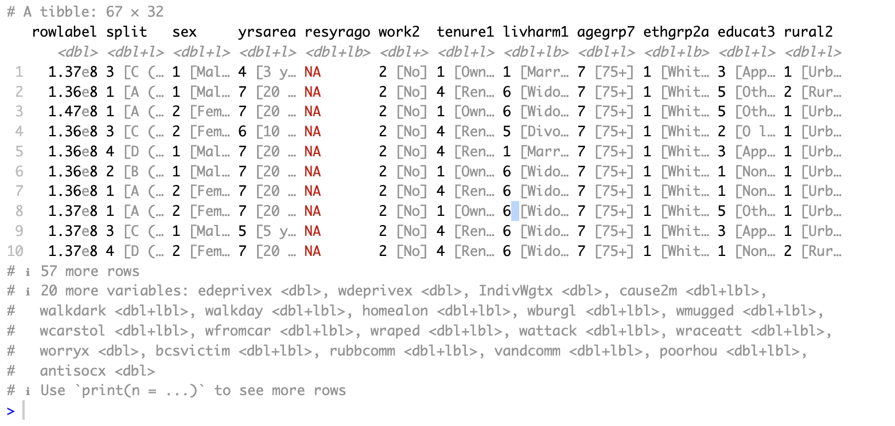
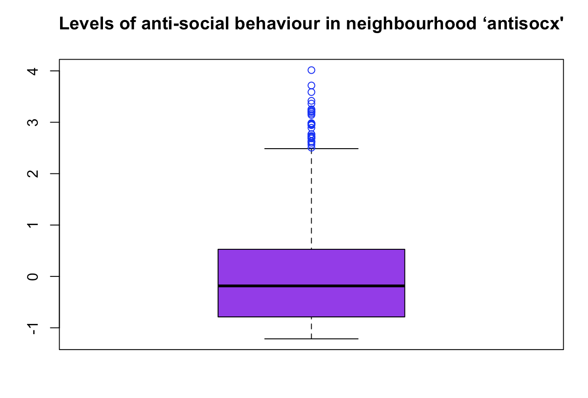
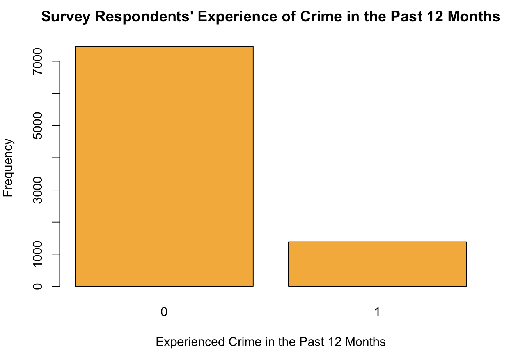
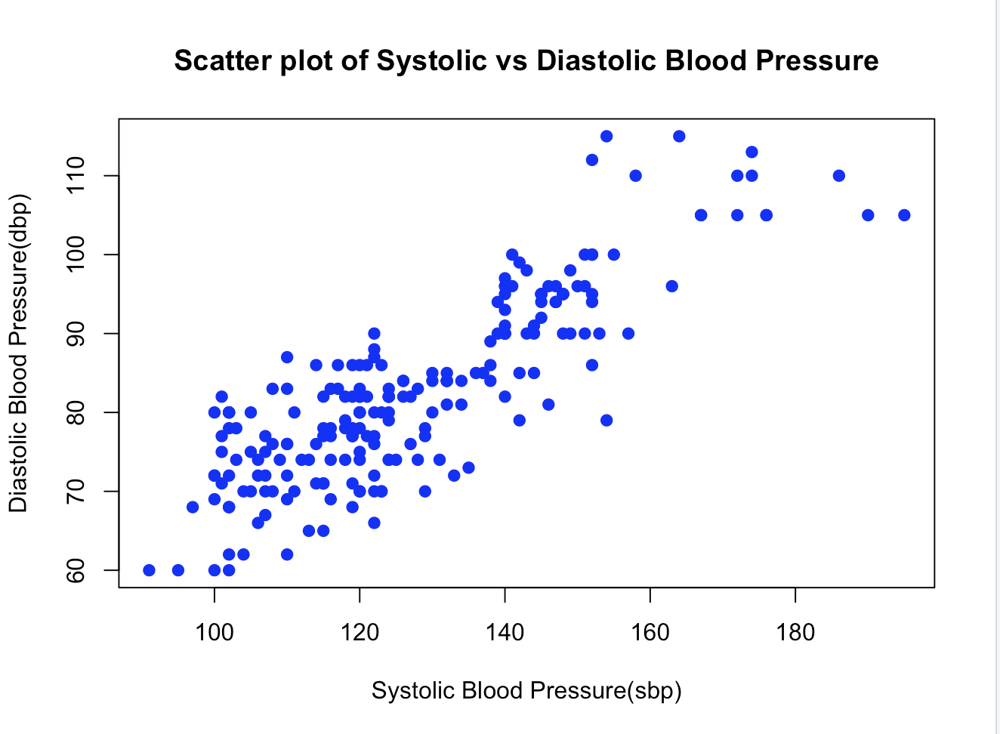
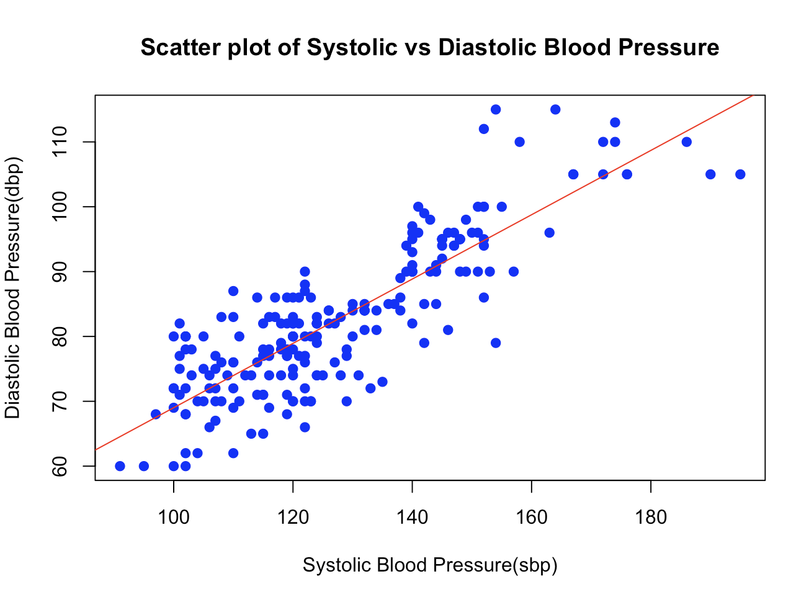
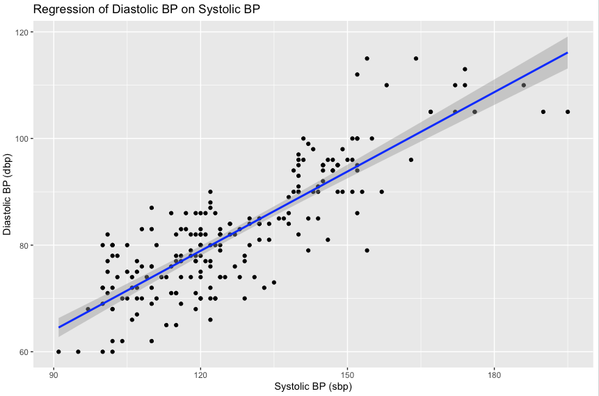

March 2024 - June 2024
Data Activities
Data Activity 1
Download the Crime Survey for England and Wales, 2013-2014: Unrestricted Access Teaching Dataset from its catalogue page. It is an open access dataset which the data are available to download without any registration with the UK Data Service.
- Ensure you download and save the SPSS.sav version of the dataset. Save the data into a folder that you would like to save all your data and R activities in as we will return to this dataset regularly during the module.
- Using the Crime Survey for England and Wales, 2013-2014: Unrestricted Access Teaching Dataset, assess the level of anti-social behaviour that the survey respondents experience in their neighbourhood by creating a summary statistic, using the ‘antisocx’ variable.
- Systematic understanding of the key mathematical and statistical concepts and techniques which underpin mechanisms in Data Science and AI.
Solution
Task 1.2

> as_data = csew1314teachingopen[, 32]
> table(as_data$antisocx)
-1.21526670455933 -1.00174283981323 -0.998238801956177 -0.990557968616486
320 73 27 23
-0.966681122779846 -0.950397610664368 -0.939043998718262 -0.916930258274078
17 30 27 9
...
...
> mean(as_data$antisocx)
[1] NA
> median(as_data$antisocx)
[1] NA
> max(as_data$antisocx)
[1] NA
> min(as_data$antisocx)
[1] NA
> range(as_data$antisocx)
[1] NA NA
> var(as_data$antisocx)
[1] NA
> sd(as_data$antisocx)
[1] NA
> summary(as_data$antisocx)
Min. 1st Qu. Median Mean 3rd Qu. Max. NA's
-1.215 -0.788 -0.185 -0.007 0.528 4.015 6694
Data Activity 2
Using the Crime Survey for England and Wales, 2013-2014: Unrestricted Access Teaching Dataset (see Unit 1), perform the following activities:- Explore whether survey respondents experienced any crime in the 12 months prior to the survey using the variable bcsvictim.
- Create a frequency table to count if the survey respondents experienced any crime in the previous 12 months. Use the table() command.
- Assess the results and decide if you need to convert this variable into a factor variable. Use as_factor.
- Remember to record your findings in your e-portfolio
- Systematic understanding of the key mathematical and statistical concepts and techniques which underpin mechanisms in Data Science and AI.
- Apply mathematical and statistical methods in these fields to help in the decision-making process.
Solution
> library(haven)
> csew1314teachingopen <- read_sav(("Library/.../csew1314teachingopen.sav")
> View(csew1314teachingopen)
> bcsvictim = csew1314teachingopen[,28]
> table(bcsvictim$bcsvictim)
0 1
7460 1383
> vec1 = c(bcsvictim)
> as_factor = factor(vec1)
> as_factor
> levels(as_factor) = c("No", "Yes")
> print(as_factor)
bcsvictim
No
Levels: No Yes
Data Activity 3
Using the Crime Survey for England and Wales, 2013-2014: Unrestricted Access Teaching Dataset (see Unit 1), perform the following activity:
- Create a subset of individuals who belong to the ‘75+’ age group and who were a ‘victim of crime’ that occurred in the previous 12 months. Save this dataset under a new name 'crime_75victim'.
- Systematic understanding of the key mathematical and statistical concepts and techniques which underpin mechanisms in Data Science and AI.
- Apply mathematical and statistical methods in these fields to help in the decision-making process.
Solution
> crime_75victim <- csew1314teachingopen[csew1314teachingopen$agegrp7 == 7 &
csew1314teachingopen$bcsvictim == 1, ]
> print(crime_75victim)

Data Activity 4
Using the Crime Survey for England and Wales, 2013-2014: Unrestricted Access Teaching Dataset (see Unit 1), perform the following activities:
- Create a boxplot for the variable 'antisocx' Follow the instructions below to create a boxplot for assessing levels of anti-social behaviour that the survey respondents experience in their neighbourhood (use the variable: antisocx).
If you’re using ‘graphics’: Add “Levels of anti-social behaviour in neighbourhood ‘antisocx’” as a title and colour the plot in purple and colour the outliers in blue.
- Create a bar plot using either the barplot() function or the ggplot() function to assess whether or not the survey respondents experienced crime in the 12 months prior to the survey (use the variable 'bcsvictim'). Give the graph a suitable title and choose a colour for the bars (e.g., orange).
- Systematic understanding of the key mathematical and statistical concepts and techniques which underpin mechanisms in Data Science and AI.
- Apply mathematical and statistical methods in these fields to help in the decision-making process.
Solutions
Task 4.1
> library(haven)
> csew1314teachingopen <- read_sav("Library/...")
> View(csew1314teachingopen)
> antisocx = csew1314teachingopen[, 32]
> View(antisocx)
> boxplot(antisocx)
> boxplot(antisocx, main= "Levels of anti-social behaviour in neighbourhood ‘antisocx'", col = "purple", outcol = "blue")

Task 4.2
> bcsvictim = csew1314teachingopen[, 28]
> bcsvictim_wo_na_values <-table(bcsvictim, useNA = "no")
> View(bcsvictim_wo_na_values)
> barplot(bcsvictim_wo_na_values,
+ main = "Survey Respondents' Experience of Crime in the Past 12 Months",
+ col = "orange",
+ xlab = "Experienced Crime in the Past 12 Months",
+ ylab = "Frequency")

Data Activity 5
Using the Health_Data, please perform the following functions in R:
- Find out mean, median and mode of variables sbp, dbp and income.
- Find out the five-figure summary of income variable and present it using a Boxplot.
- Run a suitable hypothesis test to see if there is any association between systolic blood pressure and presence and absence of peptic ulcer.
- Systematic understanding of the key mathematical and statistical concepts and techniques which underpin mechanisms in Data Science and AI.
- Apply mathematical and statistical methods in these fields to help in the decision-making process.
Solutions
Task 5.1
// Open dataset and view
> library(haven)
> Health_Data <- read_sav("Library/.../Health Data.sav")
> View(Health_Data)
// Create and view sbp variable
> sbp = Health_Data[, 9]
> View(sbp)
// Create and view dbp variable
> dbp = Health_Data[, 10]
> View(dbp)
// Find mean of sbp
> mean_sbp <- mean(Health_Data$sbp)
> cat("Mean of sbp:", mean_sbp)
Mean of sbp: 127.7333
// Find median of sbp
> median_sbp = median(Health_Data$sbp)
> cat("Median of sbp:", median_sbp)
Median of sbp: 123
// Find mode of sbp
> get_mode <- function(x) {
ux <- unique(x)
ux[which.max(tabulate(match(x, ux)))]
}
> mode_sbp <- get_mode(Health_Data$sbp)
> cat("Mode of sbp:", mode_sbp)
Mode of sbp: 120
// Find mean, median, and mode of dbp
> mean_dbp = mean(Health_Data$dbp)
> cat("Mean of dbp:", mean_dbp)
Mean of dbp: 82.76667
> median_dbp = median(Health_Data$dbp)
> cat("Median of dbp: ", median_dbp)
Median of dbp: 82
> mode_dbp <- get_mode(Health_Data$dbp)
> cat("Mode of dbp: ", mode_dbp)
Mode of dbp: 80
// Find mean, median, and mode of income
> mean_income = mean(Health_Data$income)
> cat("Mean of income: ", mean_income)
Mean of income: 85194.49
> median_income = median(Health_Data$income)
> cat("Median of income: ", median_income)
Median of income: 86560.5
> mode_income = get_mode(Health_Data$income)
> cat("Mode of income: ", mode_income)
Mode of income: 79774

Task 5.2
// Find 5-figure summary of income
> summary_income = summary(Health_Data$income)
> cat("5-figure summary of income: ", summary_income)
5-figure summary of income: 52933 68636.5 86560.5 85194.49 99696.25 117210
// Peresent it using a boxplot
> boxplot(Health_Data$income, main = "Boxplot of Income", ylab = "Income")
Task 5.3
// First check the structure of variables sbp and pepticulcer
> str(Health_Data$sbp)
num [1:210] 107 105 157 101 101 123 148 100 102 141 ...
- attr(*, "label")= chr "Systolic BP"
- attr(*, "format.spss")= chr "F8.0"
> str(Health_Data$pepticulcer)
dbl+lbl [1:210] 2, 1, 2, 2, 2, 1, 2, 1, 2, 1, 2, 1, 2, 1, 1, 2, 2, 2, 2, 2, 2, 2, 2, 2, 2, 2, 2...
@ label : chr "Have peptic ulcer"
@ format.spss: chr "F1.0"
@ labels : Named num [1:2] 1 2
..- attr(*, "names")= chr [1:2] "Yes" "No"
/*
Finally, we use the wilcox.test() function to perform the Mann-Whitney U test. The formula
sbp ~ pepticulcer indicates that we want to test the association between systolic blood pressure
(sbp) and the presence or absence of peptic ulcer (pepticulcer). The data argument specifies the
dataset.
The Mann-Whitney U test is a non-parametric test that doesn't assume normality in the data and
is suitable for comparing the distribution of a continuous variable (sbp) between two groups
(presence and absence of peptic ulcer). The test will output a p-value, which indicates the
significance of the association. If the p-value is below a certain threshold (e.g., 0.05), we
can conclude that there is a significant association between sbp and peptic ulcer.
*/
> wilcox.test(sbp ~ pepticulcer, data = Health_Data)
Wilcoxon rank sum test with continuity correction
data: sbp by pepticulcer
W = 3975.5, p-value = 0.1434
alternative hypothesis: true location shift is not equal to 0
/*
Conclusion:
Test statistic (W): In this case, the test statistic is 3975.5. This value represents the sum
of the ranks assigned to the systolic blood pressure (sbp) values in the two groups (presence
and absence of peptic ulcer). P-value: The p-value associated with the test statistic is 0.1434.
This value represents the probability of observing a test statistic as extreme as, or more
extreme than, the one obtained if the null hypothesis (no difference in sbp between the two
groups) were true.
Alternative hypothesis: The alternative hypothesis stated by the test is that the true location
shift (difference in sbp between the two groups) is not equal to 0. This means that the test is
assessing whether there is a significant difference in sbp between the presence and absence of
peptic ulcer groups. Based on the output, with a p-value of 0.1434, we would typically use a
significance level (alpha) of 0.05. Since the p-value is greater than alpha, we fail to reject
the null hypothesis. This means that there is not enough evidence to conclude that there is a
significant difference in systolic blood pressure between individuals with peptic ulcer and
those without peptic ulcer. Therefore, based on this hypothesis test, we cannot conclude that
there is an association between systolic blood pressure and the presence or absence of peptic
ulcer in the population represented by the dataset.
*/
Data Activity 6
Using the Health_Data, please perform the following functions in R:
- Find out the mean, median and mode of ‘age’ variable.
- Find out whether median diastolic blood pressure is same among diabetic and non-diabetic participants.
- Find out whether systolic BP is different across occupational group.
- Systematic understanding of the key mathematical and statistical concepts and techniques which underpin mechanisms in Data Science and AI.
- Apply mathematical and statistical methods in these fields to help in the decision-making process.
Solution
Task 6
// Find mean, median, and mode of 'age'-variable
> library(haven)
> Health_Data <- read_sav("Library/.../Health Data.sav")
> View(Health_Data)
> age = Health_Data[, 2]
> View(age)
> mean_age <- mean(Health_Data$age)
> median_age = median(Health_Data$age)
> get_mode <- function(x) {
+ ux <- unique(x)
+ ux[which.max(tabulate(match(x, ux)))]
+ }
> mode_age <- get_mode(Health_Data$age)
/*
Find out whether median diastolic blood pressure is same among diabetic and non-diabetic participants
*/
// View the structure of 'diabetes'-variable
> str(Health_Data$diabetes)
dbl+lbl [1:210] 2, 1, 2, 2, 1, 1, 1, 2, 2, 2, 1, 2, 2, 1, 2, 2, 2, 2, 1, 2, 1, 1, 2, 2, 1, 2, 2...
@ label : chr "Have diabetes mellitus"
@ format.spss: chr "F2.0"
@ labels : Named num [1:2] 1 2
..- attr(*, "names")= chr [1:2] "Yes" "No"
// Subset the data into diabetic and non-diabetic groups
> dbp_diabetic <- Health_Data$dbp[Health_Data$diabetes == 1]
> dbp_non_diabetic <- Health_Data$dbp[Health_Data$diabetes == 2]
// Perform the Mann-Whitney U test
> wilcox.test(dbp_diabetic, dbp_non_diabetic)
Wilcoxon rank sum test with continuity correction
data: dbp_diabetic and dbp_non_diabetic
W = 3804.5, p-value = 0.7999
alternative hypothesis: true location shift is not equal to 0
/*
The p-value of 0.7999 is greater than the conventional significance level of 0.05. Therefore, we
fail to reject the null hypothesis.
Conclusion: Based on the results of the Wilcoxon rank sum test, there is not enough evidence to
conclude that the median diastolic blood pressure differs between diabetic and non-diabetic
participants. Therefore, we cannot conclude that the median diastolic blood pressure is different
among diabetic and non-diabetic participants.
*/
// Find out whether systolic BP is different across occupational group
// View the structure of the 'occupation'-variable
> str(Health_Data$occupation)
dbl+lbl [1:210] 1, 4, 4, 1, 2, 4, 1, 2, 3, 1, 3, 4, 2, 4, 4, 2, 3, 3, 3, 1, 1, 3, 1, 3, 2, 4, 2...
@ label : chr "Occupation"
@ format.spss: chr "F1.0"
@ labels : Named num [1:4] 1 2 3 4
..- attr(*, "names")= chr [1:4] "GOVT JOB" "PRIVATE JOB" "BUSINESS" "OTHERS"
// Convert 'occupation' column to a factor with appropriate labels
> Health_Data$occupation <- factor(Health_Data$occupation, labels = c("GOVT JOB", "PRIVATE JOB",
"BUSINESS", "OTHERS"))
/*
To determine whether sbp differs across occupational groups, we will use an appropriate statistical
test, such as analysis of variance (ANOVA)
*/
// Perform the Kruskal-Wallis test
> kruskal.test(sbp ~ occupation, data = Health_Data)
Kruskal-Wallis rank sum test
data: sbp by occupation
Kruskal-Wallis chi-squared = 0.77906, df = 3, p-value = 0.8545
/*
The output of the Kruskal-Wallis test indicates the following:
1) Kruskal-Wallis chi-squared statistic: 0.77906
2) Degrees of freedom: 3
3) p-value: 0.8545
The p-value of 0.8545 is greater than the conventional significance level of 0.05. Therefore, we fail
to reject the null hypothesis.
Conclusion: Based on the results of the Kruskal-Wallis test, there is not enough evidence to conclude
that the systolic blood pressure (sbp) differs across occupational groups. Therefore, we cannot
conclude that there is a significant difference in systolic blood pressure across occupational groups.
*/
Data Activity 7
Using the Crime Survey for England and Wales, 2013-2014: Unrestricted Access Teaching Dataset, perform the following activities:
- Create a crosstab to assess how individuals’ experience of any crime in the previous 12 months bcsvictim vary by age group agegrp7.
- Create the crosstab with bcsvictim in the rows and agegrp7 in the columns, and produce row percentages, rounded to 2 decimal places.
- Looking at the crosstab you have produced, which age groups were the most likely, and least likely, to be victims of crime?
- Systematic understanding of the key mathematical and statistical concepts and techniques which underpin mechanisms in Data Science and AI.
- Apply mathematical and statistical methods in these fields to help in the decision-making process.
- Critically evaluate the use of statistical analysis and the numeric interpretation of results as aids in the decision-making process.
Solutions
Task 7.1
// Load library haven for reading spss files
> library(haven)
// Read and view the dataset
> csew1314teachingopen <- read_sav("Library/.../csew1314teachingopen.sav")
> View(csew1314teachingopen)
// Create a crosstab for bcsvictim and vary by agegrp7
> crosstab = table(csew1314teachingopen$bcsvictim, csew1314teachingopen$agegrp7)
// Print the crosstab
> print(crosstab)
1 2 3 4 5 6 7
0 523 1049 1194 1242 1226 1194 1032
1 162 310 248 273 202 121 67
Task 7.2
// Convert the counts to row percentages
> row_percentages = prop.table(crosstab, 1)
// Round the percentages to 2 decimal places
> row_percentages = round(row_percentages * 100, 2)
// Print the row percentages
> print(row_percentages)
1 2 3 4 5 6 7
0 7.01 14.06 16.01 16.65 16.43 16.01 13.83
1 11.71 22.42 17.93 19.74 14.61 8.75 4.84
Task 7.3
// View the structure of the agegrp7 variable
> str(csew1314teachingopen$agegrp7)
dbl+lbl [1:8843] 4, 5, 5, 5, 6, 6, 4, 5, 5, 7, 2, 7, 7, 4, 4, 7, 4, 6, 5, 3, 6, 4, 3, 4, 3, 4, 5, 2, 5, 6, 6,
7, 6, 2, 4, 4, 5, 6...
@ label : chr "Age group (7 bands)"
@ format.spss: chr "F8.0"
@ labels : Named num [1:7] 1 2 3 4 5 6 7
..- attr(*, "names")= chr [1:7] "16-24" "25-34" "35-44" "45-54" ...
/*
Looking at the crosstab, we can see that for the individuals who were not victims of crime (0), age
group 4 (age 45-54) has the highest percentage (16,65%), meaning it is the least likely to be victim of crime
We can see that for the individuals who were victims of crime (1), age group 2 (age 25-34) has the highest
percentage (22,42%), meaning it is the most likely to be victim of crime
*/
Data Activity 8
Using the Health_Data, please perform the following functions in R:
- Find out correlation between systolic and diastolic BP.
- Produce a scatter plot between systolic and diastolic BP.
- Systematic understanding of the key mathematical and statistical concepts and techniques which underpin mechanisms in Data Science and AI.
- Apply mathematical and statistical methods in these fields to help in the decision-making process.
- Critically evaluate the use of statistical analysis and the numeric interpretation of results as aids in the decision-making process.
Solutions
Task 8.1
// Load the dataset
library(haven)
Health_Data <- read_spss(".../HealthData.sav")
// Extract the sbp and dbp columns
sbp = Health_Data$sbp
dbp = Health_Data$dbp
// Calculate the correlation between sbp and dbp
correlation = cor(sbp, dbp, use = "complete.obs")
// Print the correlation result
print(correlation)
[1] 0.846808
/*
The correlation coefficient we obtained, r=0.846808, indicates a very strong positive relationship between
systolic blood pressure (sbp) and diastolic blood pressure (dbp) in our dataset.
*/
Task 8.2
// Scatter plot to visualize the relationship
plot(sbp, dbp, main = "Scatter plot of Systolic vs Diastolic Blood Pressure",
xlab = "Systolic Blood Pressure (sbp)",
ylab = "Diastolic Blood Pressure (dbp)",
pch = 19, col = "blue")

// Add a regression line
abline(lm(dbp ~ sbp), col = "red")

Data Activity 9
Using the Health_Data, please perform the following functions in R:
- Perform simple linear regression analysis to find the population regression equation to predict the diastolic BP by systolic BP.
- Interpret the findings of regression analysis at 5% level of significance.
- Systematic understanding of the key mathematical and statistical concepts and techniques which underpin mechanisms in Data Science and AI.
- Apply mathematical and statistical methods in these fields to help in the decision-making process.
- Critically evaluate the use of statistical analysis and the numeric interpretation of results as aids in the decision-making process.
Solutions
Task 9.1
// Read file
> library(haven)
> Health_Data <- read_sav("Library/.../Health Data.sav")
> View(Health_Data)
// Create model
> model = lm(dbp ~ sbp, data = Health_Data)
// Summarize model
> summary(model)
Call:
lm(formula = dbp ~ sbp, data = Health_Data)
Residuals:
Min 1Q Median 3Q Max
-16.7958 -3.9366 0.1804 3.6685 19.2042
Coefficients:
Estimate Std. Error t value Pr(>|t|)
(Intercept) 19.4068 2.7931 6.948 4.67e-11 ***
sbp 0.4960 0.0216 22.961 < 2e-16 ***
---
Signif. codes: 0 ‘***’ 0.001 ‘**’ 0.01 ‘*’ 0.05 ‘.’ 0.1 ‘ ’ 1
Residual standard error: 6.264 on 208 degrees of freedom
Multiple R-squared: 0.7171, Adjusted R-squared: 0.7157
F-statistic: 527.2 on 1 and 208 DF, p-value: < 2.2e-16
// Install and load broom library to get tidy model outputs
> install.packages("broom")
> library(broom)
// Get tidy model output
> tidy(model)
# A tibble: 2 × 5
term estimate std.error statistic p.value
<chr> <dbl> <dbl> <dbl> <dbl>
1 (Intercept) 19.4 2.79 6.95 4.67e-11
2 sbp 0.496 0.0216 23.0 6.11e-59
// Install and load ggplot2 library to create regression line with ggplot2
> install.packages("ggplot2")
> library(ggplot2)
// Plot the regression line with ggplot2
> ggplot(Health_Data, aes(x = sbp, y = dbp)) +
geom_point() +
geom_smooth(method = "lm", col = "blue") +
labs(title = "Regression of Diastolic BP on Systolic BP",
x = "Systolic BP (sbp)",
y = "Diastolic BP (dbp)")

Task 9.2
/*
1. Model Summary:
The regression model used is:
dbp = β0 + β1 * sbp
2. Coefficients:
The coefficients table shows the estimated values for the intercept β0 and the slope β1:
Intercept β0 = 19.4068
- This is the estimated value of diastolic blood pressure (DBP) when systolic blood pressure (SBP) is zero.
Although it's not practically meaningful to have an SBP of zero, it provides a baseline for the model.
Slope β1 = 0.4960
- This is the estimated change in DBP for each one-unit increase in SBP. Specifically, for each additional
unit of SBP, DBP is expected to increase by 0.4960 units.
3. Statistical Significance:
The p-value for the slope β1 is < 2e-16, which is much less than the 5% significance level (0.05). This
indicates that the relationship between SBP and DBP is statistically significant.
The t-value for the slope β1 is 22.961, indicating strong evidence against the null hypothesis H0
(which states that there is no relationship between SBP and DBP).
4. Goodness of Fit:
Multiple R-squared R2 = 0.7171
- This indicates that approximately 71.71% of the variability in DBP can be explained by SBP. This
suggests a strong linear relationship between SBP and DBP.
Adjusted R-squared R2: 0.7157
- Similar to the R-squared but adjusted for the number of predictors in the model. Since there is only
one predictor, it is almost the same as the R-squared.
5. Residual Standard Error (RSE):
Residual standard error: 6.264 on 208 degrees of freedom
This is the standard deviation of the residuals (errors). It gives an estimate of the typical size of
the errors in the model's predictions.
A lower value indicates a better fit, but the value itself should be interpreted in the context of the
data's scale.
6. F-statistic:
F-statistic: 527.2 on 1 and 208 DF, p-value: < 2.2e-16
This statistic tests the overall significance of the model.
The very small p-value indicates that the model is highly significant.
Interpretation at 5% Significance Level:
1. Significant Relationship:
- There is a statistically significant relationship between systolic blood pressure (SBP) and diastolic
blood pressure (DBP) at the 5% level of significance.
- The p-value for the SBP coefficient is less than 0.05, leading us to reject the null hypothesis H0
that β1 = 0
2. Model Fit:
- The model explains a substantial proportion of the variability in DBP, as indicated by the high R-squared
value R2 (71.71%).
3. Predictive Power:
- For each unit increase in SBP, DBP increases by approximately 0.496 units.
4. Reliability of Estimates:
- The small standard errors and high t-values suggest that our coefficient estimates are reliable
Conclusion:
At a 5% level of significance, the systolic blood pressure (SBP) is a significant predictor of diastolic
blood pressure (DBP).
The regression model fits the data well, explaining about 71.71% of the variability in DBP.
The relationship is positive, meaning as SBP increases, DBP also increases.
The regression analysis provides strong evidence to reject the null hypothesis in favor of the
alternative hypothesis. Therefore, we conclude that there is a significant relationship between
systolic blood pressure and diastolic blood pressure at the 5% significance level.
*/